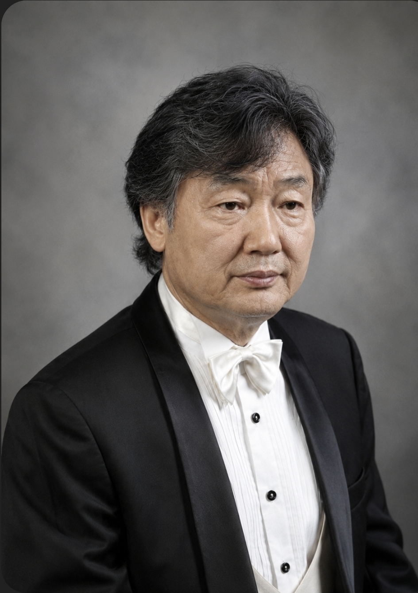
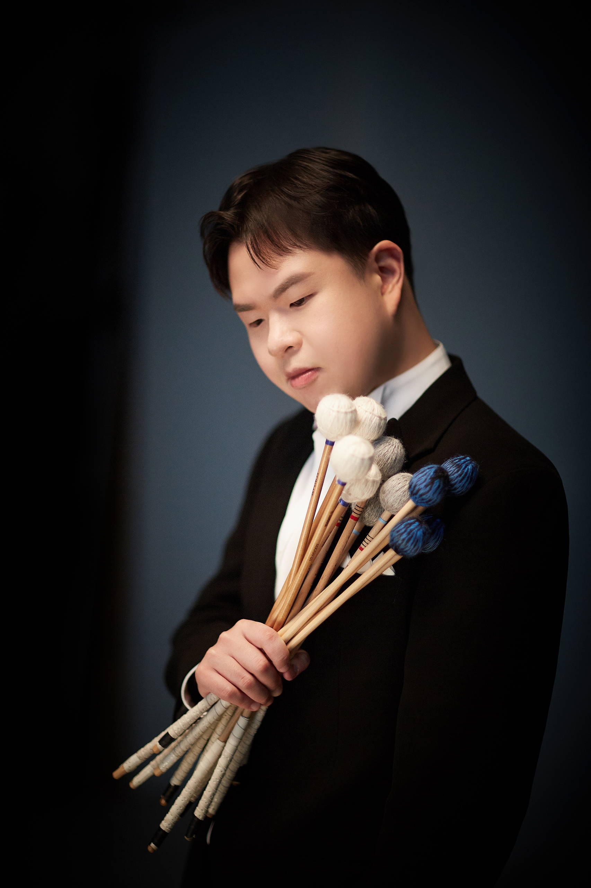
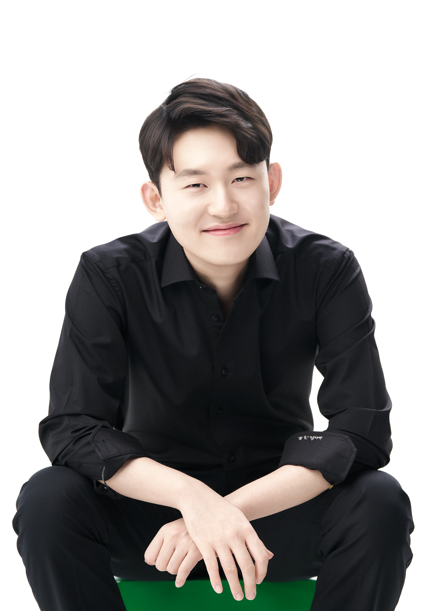

PROGRAM
Ⅰ. 순수와 깨어남
🌿 아름다운 세상
🎼 Pierpoint / Rutter
영국의 시인 F. S. Pierpoint의 시에 John Rutter가 따뜻한 선율을 붙인 작품입니다. 자연의 아름다움뿐 아니라 가족과 친구, 그리고 인간이 누릴 수 있는 모든 사랑과 감사의 마음을 노래합니다.
🎧
처음에는 피아노 위에 조용히 한 줄기의 선율이 시작됩니다. 점차 화성이 쌓이며 점진적으로 객석 전체를 감싸는 따뜻한 울림을 넓혀 갑니다.
📖
이 작품의 가사는 공연장에서 제공되는 인쇄 프로그램북을 참고해 주세요.
🍃 바람이 불어오는 곳
🎼 김광석
바람을 따라 떠나는 여행을 통해 희망과 설렘, 그리고 새로운 시작을 노래하는 대한민국의 대표적인 명곡입니다.
🎧 이렇게 들어보세요
속삭이듯 시작되는 선율이 점차 여러 성부의 화성으로 확장됩니다. 합창단의 부드러운 호흡이 관객의 마음을 따뜻하게 감싸는 순간을 느껴보세요.
📖
[1절]
바람이 불어오는 곳 그곳으로 가네
그대의 머릿결 같은 나무 아래로
덜컹이는 기차에 기대어 너에게 편지를 쓴다
꿈에 보았던 길, 그 길에 서 있네
지쳐버린 내 마음을 따뜻하게 감싸줄
그대의 웃음소리를 찾아 떠나네
[2절]
설레임과 두려움으로 불안한 행복이지만
힘겨운 날들도 지나 새로운 꿈들을 위해
바람이 불어오는 곳 그곳으로 가네
햇살이 눈부신 곳 그곳으로 가네
바람에 내 몸 맡기고 그곳으로 가네
🌸 나 하나 꽃 피어 윤학준
🎼 조동화 / 윤학준
조동화 시인의 시를 윤학준 작곡가가 아름다운 합창곡으로 만든 작품입니다. 한 사람의 작은 변화가 세상을 바꾼다는 희망의 메시지를 담고 있습니다.
🎧
작은 목소리에서 시작하여 후반부로 갈수록 장엄한 합창으로 성장하는 드라마틱한 구성을 감상해 보세요.
📖
나 하나 꽃 피어 풀밭이 달라지겠냐고
나 하나 물들어 산이 달라지겠냐고
말하지 말아라
내가 꽃 피우고 너도 꽃 피우면
결국 온 세상이 꽃밭이 되는 것 아니겠느냐
내가 물들고 너도 물들면
결국 온 산이 활활 타오르는 것 아니겠느냐
🌿 담쟁이
🎼 도종환 / 안치환
도종환 시인의 시를 바탕으로, 넘을 수 없을 것 같은 절망의 벽도 함께라면 넘을 수 있다는 희망을 노래합니다.
🎧
묵직하게 반복되는 리듬과 차곡차곡 쌓이는 화성이 담쟁이가 벽을 오르는 모습을 음악으로 표현합니다.
📖
저것은 넘을 수 없는 절망의 벽이라고
고개를 떨구고 있을 때
담쟁이는 말없이 그 벽을 오른다
서두르지 않고, 한 뼘이라도
꼭 여럿이 함께 손을 잡고 올라간다
푸르게 절망을 다 덮을 때까지
담쟁이 잎 하나는
담쟁이 잎 수천 개를 이끌고
결국 그 벽을 넘는다
🌊 Let the River Run
🎼 Carly Simon
영화 Working Girl의 주제가로, 꿈을 향해 달려가는 사람들의 희망을 강물에 비유하여 강렬한 라틴 리듬으로 표현한 작품입니다.
🎧
오늘은 이 공연을 위해 타악기와 콘트라베이스가 강렬함을 더하여 힘차고 신나는 장면을 완성합니다.
📖
[출범: 안개를 뚫고 나아가는 우리]
우리는 저 끝을 향해 물 위를 달리고
안개를 헤치며 나아간다, 당신의 아들과 딸들이.
[선언: 꿈꾸는 이들의 부름]
강물이 흐르게 하라!
모든 꿈꾸는 이들이여, 이 나라를 깨워라.
오라, 새로운 낙원이여.
은빛 도시들이 우뚝 솟아오르고
아침 햇살은 마중 나온 거리들을 환히 비추네.
[질주: 열망의 길을 밝히며]
위대하거나 보잘것없는 우리 모두는 별 위에 서서
어두운 새벽을 뚫고 열망의 길을 환히 밝히네.
손을 뻗어 그 기회를 잡으라, 가슴은 터질 듯 고동치니.
지금 나와 함께 달리자, 하늘은 눈부신 푸른빛이니!
[환희: 강물처럼 흐르는 희망]
강물이 흐르게 하라,
모든 꿈꾸는 이들이여, 이 나라를 깨워라!
Special Performers

Percussion
이건수
서울시립교향악단 인천시립교향악단 단원 역임 성균관대학교 단국대학교 강사 역임

Percussion
유용연
하트 아트&컬쳐 단원 서울시향특별위촉단원 뷰티플 앙상블 단원

Percussion
박병준
(주)아트포올 미라클 앙상블 단원 서울시립교향악단 특별단원

Contrabass
김창호
약력 입력
Ⅱ. 인간과 운명
✝ Ave verum corpus
🎼 W. A. Mozart
모차르트가 생애 마지막 시기에 작곡한 대표적인 성가입니다. 짧은 길이 안에 평화와 경건함, 그리고 인간을 향한 사랑이 놀랍도록 아름답게 담겨 있습니다.
🎧
화려한 기교보다 투명한 화성과 긴 호흡만으로 간절함을 더하고 음 하나 하나를 엮어 성체의 거룩함을 찬양합니다.
📖
Ave verum corpus,
natum de Maria Virgine,
vere passum,
immolatum
in cruce pro homine.
Cujus latus perforatum
fluxit aqua et sanguine.
Esto nobis praegustatum
mortis in examine.
O Jesu dulcis,
O Jesu pie,
O Jesu fili Mariae.
Amen.
🌅 삶이 그대를 속일지라도
🎼 푸쉬킨 / 김효근
푸쉬킨의 시를 김효근이 음악으로 만든 작품입니다. 절망 속에서도 희망을 잃지 않는 인간의 마음을 따뜻하게 위로합니다.
🎧
노래의 섬세한 표현과 후반부 공간을 채우는 희망의 울림을 느껴보세요.
📖
[1절: 위로와 견딤] 삶이 그대를 속일지라도, 슬퍼하거나 화내지 마 세상이 그대를 버릴지라도, 힘든 날들을 참고 견디면 기쁨의 날은 꼭 올 거야 [2절: 희망의 미래] 마음은 언제나 미래를 꿈꾸니 슬픈 오늘은 곧 지나가 버리네 걱정과 근심 모두 사라지고, 내일은 기쁨의 날 맞으리 [3절: 약속과 완성] 삶이 그대를 차마 속일지라도, 슬퍼하거나 노하지 마 절망의 날을 참고 견디면 즐겁고 기쁜 날들 꼭 오리니
🎼 Concertino for Flute and Piano
Cécile Chaminade
샤미나드의 대표적인 작품으며 또한 플루트를 위한 대표적인 협주곡이다. 프랑스 특유의 우아함과 화려한 기교를 함께 감상할 수 있는 작품이다.
Soloists

Flute
이지영
플루티스트 이지영은 예원학교, 서울예고, 서울대학교 음악대학을 거쳐 미국 Peabody Conservatory of Music에서 대학원을 졸업하였다. 동아 콩쿠르에서 1위에 입상하였으며, 예술의전당 교향악축제와 11시 콘서트를 비롯하여 서울시향, 인천시향, 창원시향, 춘천시향, 김천시향, 경기필하모닉 오케스트라, 코리안 심포니 오케스트라, 카자흐스탄 국립교향악단 등과 협연하였고, <이지영의 이지 플루트 교실>, <사랑을 작곡한 마에스트로>를 집필하였다. 여음목관5중주 멤버로서 현재까지 36회의 정기연주회와 함께 KBS FM‘한국의 음악가’ 와 ‘감사’ 음반을 출반하였고, 통영국제음악제(TIMF) 앙상블 멤버로 20년간 국내는 물론 미국, 러시아, 싱가포르, 독일, 폴란드 등의 현대음악제에서 연주 활동을 하였다. KBS 교향악단 단원과 추계예술대학교 겸임교수를 역임하였고, 현재 협성대학교 음악학부 교수로 재직중이며, 여음목관5중주의 멤버와 버카트 아티스트, 한국플루트협회 부회장으로 활발한 활동을 벌이고 있다.

Piano
문찬양
단국대학교와 동 대학원을 졸업하였다. 2014년부터 현재까지 라파엘코러스의 전문반주자로 사역하고 있다.
🔥 Carmina Burana
Carl Orff
카르미나 부라나
① O Fortuna
운명의 거대한 수레바퀴 앞에 선 인간의 두려움과 경외를 압도적인 합창으로 표현합니다.
② Reie
중세 춤곡의 리듬을 바탕으로 활기찬 에너지를 보여주는 기악 중심의 악장입니다.
③ Stetit puella
한 소녀의 아름다움을 맑고 투명한 선율로 노래합니다.
④ Circa mea pectora
Bass의 독창(박성철)과 함께 사랑으로 인한 인간의 고뇌를 표현합니다.
⑤ O Fortuna (Reprise)
처음의 운명이 더욱 거대한 울림으로 다시 돌아옵니다.
Raphael Chorus
운영진
고문
남금주
김채원
총무
김소영
음악부장
김수현
관리부장
김미경
친교부장
박승진
친교부장
김동일
전원 시각장애인으로 구성된 라파엘코러스
Soprano
파트장 : 정둘남
김채완 · 남금주 · 정둘남 · 최영진
김소영 · 김향숙 · 이금희 · 김영희
이경아
Alto
파트장 : 이복순
유임미 · 김명원 · 김미경 · 이복순
김수현 · 양다희
Tenor
파트장 : 문광종
한성수 · 문광종 · 박승진 · 이재훈
권오식 · 정찬우
Bass
파트장 : 손대선
안덕인 · 권기욱 · 손대선 · 윤용성
김동일 · 박상명 · 박성철 · 김선영
Staff

김민주
보컬트레이너
(약력 입력)

문찬양
피아노 반주
(약력 입력)

음악감독
이돈응
서울대학교 명예교수
서울대학교 음악대학 작곡과와 독일 프라이부르크 국립음악대학교에서 작곡 및 전자음악을 전공한 이돈응 명예교수는 서울대 및 한양대 교수와 한국전자음악협회 회장을 역임한 작곡가이자 컴퓨터음악 및 음악공학자입니다. 그는 한국 현대음악과 전자음악 분야의 기틀을 다진 선구자로서 인터랙티브 음악, 음악 연주 로봇 개발, 국악 정보화 등 음악과 과학기술을 융합한 독창적인 연구와 알고리즘 작곡법 저술 등의 공로를 인정받아 국무총리 표창을 수상했습니다.

단장
유영재
라파엘코러스 단장 유영재는 서울대학교 음악대학을 졸업한 후 독일 쾰른 국립음악대학교와 미국 뉴욕 퀸즈 컬리지를 졸업하고 정통 클래식 지휘 및 음악적 기반을 탄탄히 다졌습니다. 이후 전주시립교향악단 상임지휘자를 역임하며 깊이 있는 해석과 통찰력 있는 음악으로 국내 현대음악과 교회음악 등 교향악 발전 및 지역 클래식 저변 확대에 기여했습니다. 또한 한국문화예술위원회 한국음악협회 등 음악계 주요 소임을 맡아 폭넓게 활동하였으며, 한세대학교 음악학부 교수로 정년퇴임하여 라파엘코러스와 함께 하고 있습니다.
당신의 후원이 우리 노래에 힘이 됩니다.
라파엘코러스는 시각장애인들의 예술활동과 사회 참여를 위해 노래하고 있습니다.
❤ 후원하기